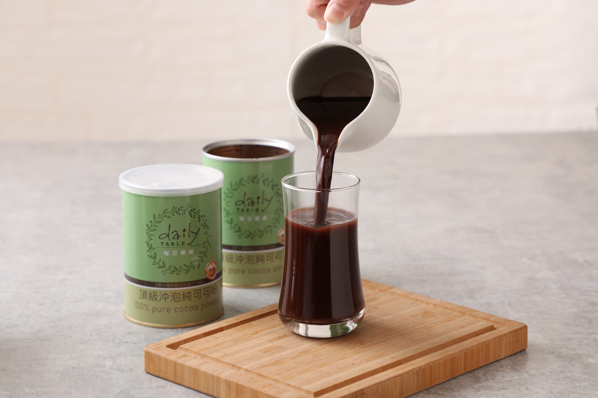
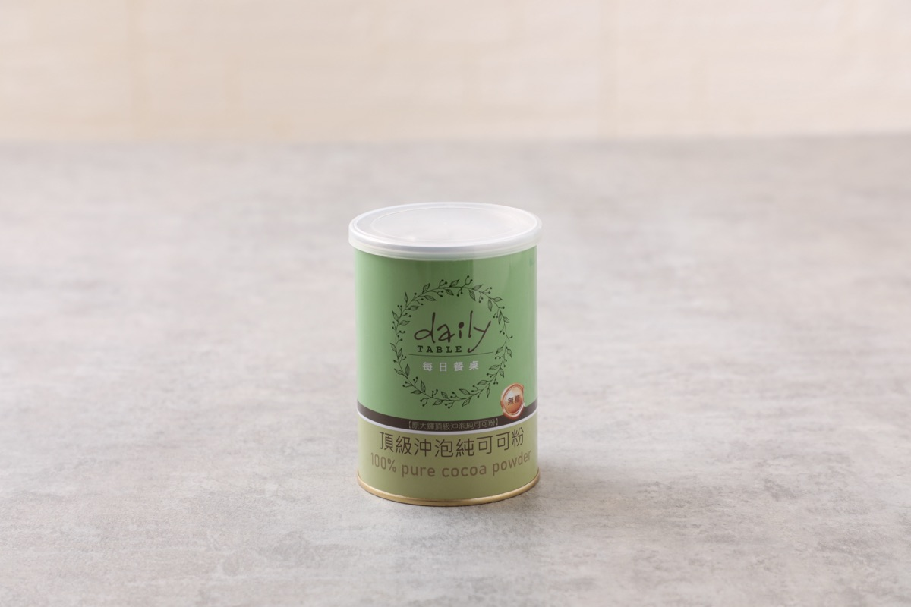
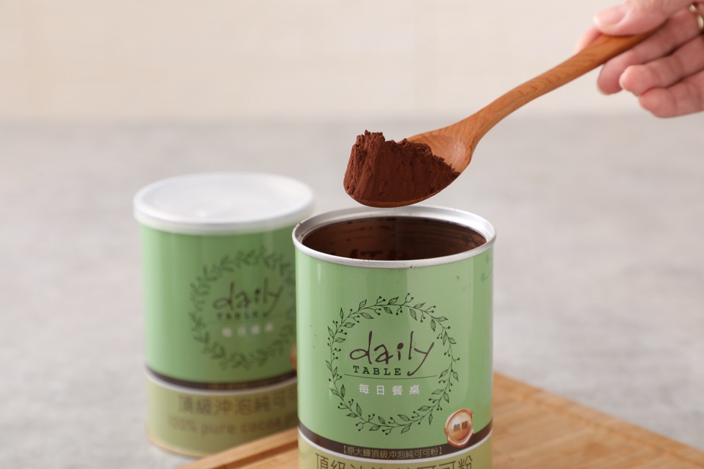

早晨，來杯可可歐蕾
先用少量溫熱液體拌勻可可粉，再加入牛奶或豆漿。濃淡依喜好調整，為早晨添一點溫柔。
DAILY TABLE · PURE COCOA
一罐純可可，為日常留一點香醇。
從早晨的第一杯，到午後的小歇，
讓簡單的美好，回到你的餐桌。

100% 純可可
無添加 砂糖與奶精
隨心搭配 你的日常飲品

01 / OUR COCOA
保留可可原有的醇厚與微苦，不以砂糖、奶精或其他調味劑修飾。讓每一杯的濃淡與甜度，都由你決定。
02 / OUR PHILOSOPHY
每日餐桌相信，值得細細品味的，往往是生活裡最簡單的事。一杯可可、一張熟悉的餐桌，和留給自己的片刻。
我們以純可可粉，把原本的風味帶回日常。讓好食材不只出現在特別的日子，也成為每一天的小小期待。
Simply cocoa. Simply good.03 / EVERYDAY RITUALS
純可可的好，
在於它能融入你喜歡的每一種生活。

先用少量溫熱液體拌勻可可粉，再加入牛奶或豆漿。濃淡依喜好調整，為早晨添一點溫柔。
將可可加入喜歡的咖啡，感受咖啡與可可交織的風味。甜度由你選擇，享受自己的午後時光。
加入蛋糕、餅乾或日常烘焙，讓可可的香氣成為分享的心意。從一罐可可，延伸更多餐桌靈感。
04 / WHERE TO BUY
選擇熟悉的購物平台，
找到屬於你的那一罐純可可。
頂級沖泡純可可粉・250g × 3 罐組
頂級 100% 沖泡純可可粉・2 入組
商品資訊仍可瀏覽，供貨請向通路確認。
頂級沖泡純可可粉
可瀏覽產品介紹，重新供貨請向通路確認。
原商品已下架。
可透過通路搜尋，查詢最新上架狀態。
原商品頁已停止提供。
可透過通路搜尋，查詢最新上架狀態。
早安健康嚴選蝦皮商城曾販售本產品，
目前供貨狀態請至賣場查詢。
通路資訊更新於 。各通路的售價、優惠、商品效期與供貨狀態，請以購物平台頁面為準。連結將於新分頁開啟。
A LITTLE MORE TO KNOW
每日餐桌頂級沖泡純可可粉的成分為 100% 無糖可可粉，不添加砂糖、奶精及其他調味劑。可依個人喜好搭配飲品或調整甜度。
每次使用後請蓋緊罐蓋，置於陰涼、乾燥及通風處，避免潮濕與高溫。保存期限與其他注意事項，請依實際商品包裝標示。
請至上方的購買通路選擇平台。不同平台的組合、價格與庫存可能不同；訂單、配送及退換貨問題，請聯繫下單平台的客服。
LET’S KEEP IN TOUCH
產品詢問、合作提案，或想分享你的可可日常，
歡迎與每日餐桌聯絡。